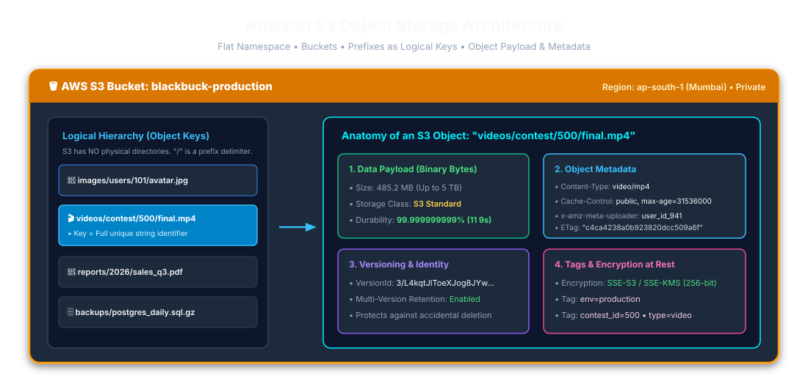
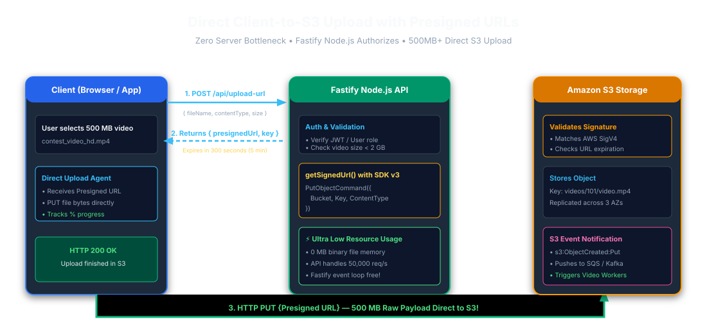
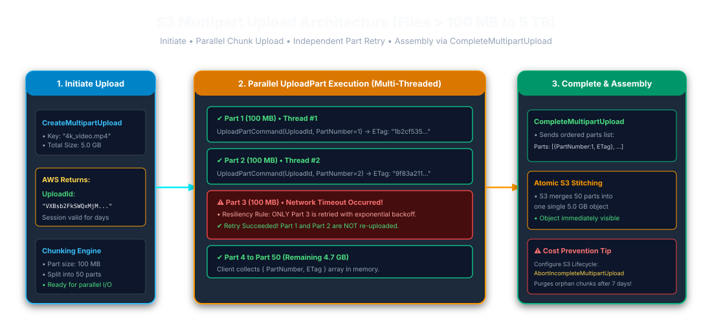
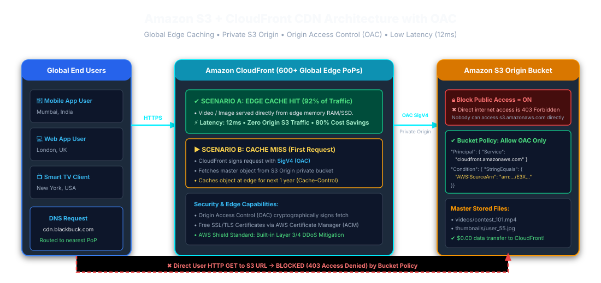
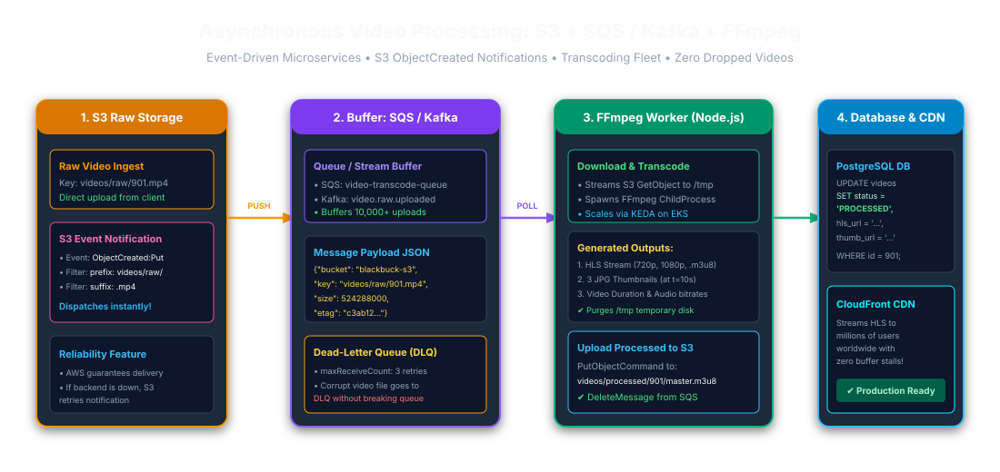
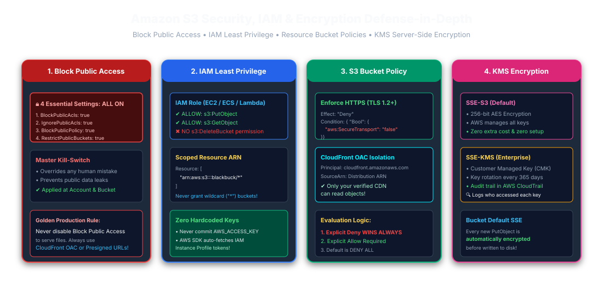

01. What is Amazon S3?
Amazon S3 (Simple Storage Service) is a distributed, massively scalable object storage
service designed to store and retrieve any volume of data from anywhere on the web with
99.999999999% (11 9s) durability.

Figure 1.1: S3 Bucket, Prefixes as Logical Keys, and Object Anatomy
🌐 हिंदी स्पष्टीकरण — Amazon S3 क्या है?
Amazon S3 एक object-storage सेवा है, जिसमें data को bucket और key से रखा और प्राप्त किया
जाता है। S3 Standard उच्च durability के लिए बनाया गया है, लेकिन durability का अर्थ zero
risk, availability या backup नहीं है। Recovery के लिए versioning और अन्य controls
configure करें।
02. Direct Client-to-S3 Upload with Presigned URLs
Proxying large file uploads through a Node.js or Fastify web server saturates event loop
memory and network bandwidth. Generating a Presigned PUT URL delegates raw payload
transmission straight to AWS S3.
A presigned URL is a bearer credential: anyone who obtains it can use it until expiry,
within the signing principal's permissions. A presigned PUT can overwrite its target key.
Use authorized, unpredictable keys and independently validate content and size.

Figure 2.1: Direct Client-to-S3 Upload Architecture with Presigned URLs
🌐 मराठी स्पष्टीकरण — Presigned URL चा फायदा
५०० MB ची फाईल Node.js सर्व्हरवरून पाठवल्यास सर्व्हर स्लो होतो. Presigned URL वापरल्याने
युझर थेट S3 वर फाईल अपलोड करतो, ज्यामुळे सर्व्हर सेकंदात हजारो युझर्सना सेवा देऊ शकतो.
03. S3 Multipart Upload Architecture
For large files, multipart upload sends parts independently and supports parallel
transfer. Current documented part sizes are 5 MiB–5 GiB, with up to 10,000 parts and no
minimum for the final part. Configure lifecycle cleanup for abandoned uploads.

Figure 3.1: Multipart Upload Parallel Execution and Atomic Complete Assembly
04. Amazon CloudFront CDN & Origin Access Control (OAC)
CloudFront can serve cached content near viewers. Latency depends on network route and
cache state. S3-to-CloudFront transfer is generally not charged as S3 internet egress, but
S3 requests, CloudFront delivery, and related features still have costs. OAC signs S3
origin requests with SigV4.

Figure 4.1: CloudFront CDN Global Edge Caching with Private S3 Origin and OAC
🌐 मराठी स्पष्टीकरण — CloudFront OAC
OAC मुळे तुमचा S3 बकेट पूर्णपणे प्रायव्हेट राहतो. कोणीही थेट S3 लिंकवरून फाईल डाऊनलोड
करू शकत नाही; फक्त तुमच्या अधिकृत CloudFront CDN द्वारेच फाईल पाहिली जाऊ शकते.
05. Asynchronous Media Processing Pipeline
S3 Event Notifications trigger SQS Queues or Kafka Streams to orchestrate background
FFmpeg transcoding workers without blocking client checkout or ingestion.
Notifications can be delivered more than once and are not guaranteed to arrive in order.
Make workers idempotent and use object version IDs or event sequencers where appropriate.

Figure 5.1: S3 Notifications, SQS/Kafka Queue, and FFmpeg Video Worker Fleet
06. S3 Security, IAM & KMS Encryption
The 4 pillars of S3 security: S3 Block Public Access, IAM Task Roles with least privilege,
Bucket Policies enforcing HTTPS TLS 1.2+, and KMS Server-Side Encryption.

Figure 6.1: S3 Security Defense-in-Depth Model
Hindi Interview Perspective
-
S3 durability, availability और backup अलग बातें हैं; recovery के लिए versioning और
tested restore plan का उल्लेख करें।
-
Presigned URL bearer credential है; expiry, signer permissions, target-key overwrite और
file validation समझाएँ।
-
Object keys filesystem paths नहीं हैं; generated keys collision और unauthorized
overwrite कम करते हैं।
-
CloudFront latency और total cost को fixed numbers न मानें; actual route, cache state और
regional pricing देखें।